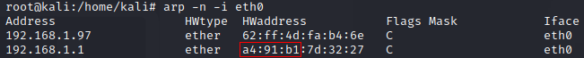
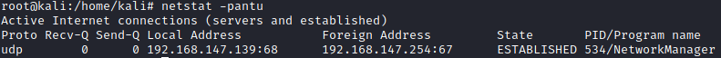
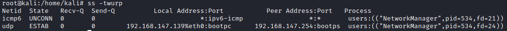

Cache (ARP, netstat, ...)
ARP (check the
ARP
chapter also)
Look in the ARP table give use remote hosts and devices, which the hosts has recently
communicated
Check the ARP table again later, it may change. If it does this might be an indication of
scheduled tasks, investigate later
msf> use post/windows/gather/arp_scanner #needed meterpreter session
root@debian:/# arp -n #Linux
C:\> arp -a #Windows
-n → disable name resolution(without generate unnecessary network traffic)
The first 24 bits (3 Bytes) of the HWaddress is the
OUI(Organizational Unique Identifier) in this way is
Technicolor a brand of routers
We can search who belong the OUI on
https://macvendors.com/netBIOSif we want to
check the NetBIOS cache of the exploited system
if we want check the NetBIOS of a remote machine see
hereExplanation
of NetBIOS
hereTCP/UDP
connections (netstat)We can check the listening ports on the local computer with
netstat or
TCPview (
see
this chapter)
◇ What other machines or devices we are currently connected to
◇ Which ports or
services on other machines we are connected to
◇ What ports our current machine are listening on
◇ Are
there other systems establishing connections with our current machine
root@debian:/# netstat -pantu #linux
 -p, --programs → display
PID/Program name for sockets
-a, --all → display all sockets (default: connected)
-n, --numeric →
don't resolve names
-t, --tcp → tcp ports
-u, --udp → udp ports
root@debian:/# ss -twurp #linux
An alternative to netstat

C:\> netstat -anob #windows
-a → displays all connections and listening ports.
-n → displays addresses and port numbers in
numerical form.
-o → displays the owning process ID associated with each connection.
-b → displays the
executable involved in creating each connection or listening port
What if the system is
restricted and not has netcat?We have to parse the informations from the files
◇
/proc/net/tcp
◇ /proc/net/udp
Since the
addresses and ports in
these files are hex encoded, they are not particularly user friendly (unless you do all your network
addressing in hex).
awk, can be a swiss army knife for processing these files.
Check:
https://staaldraad.github.io/2017/12/20/netstat-without-netstat/